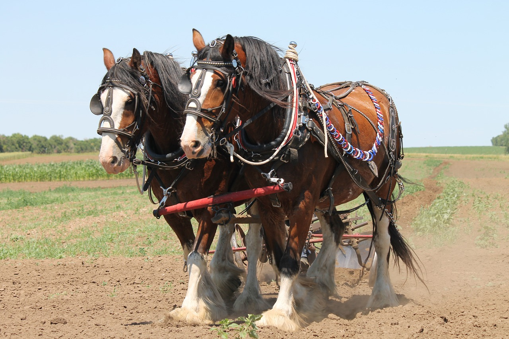
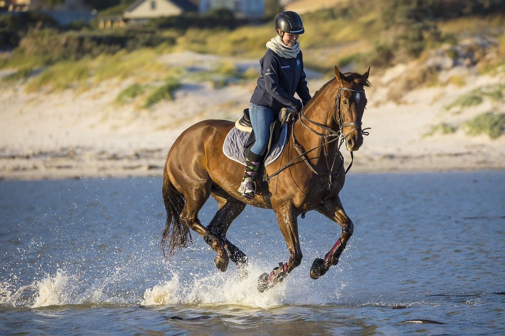
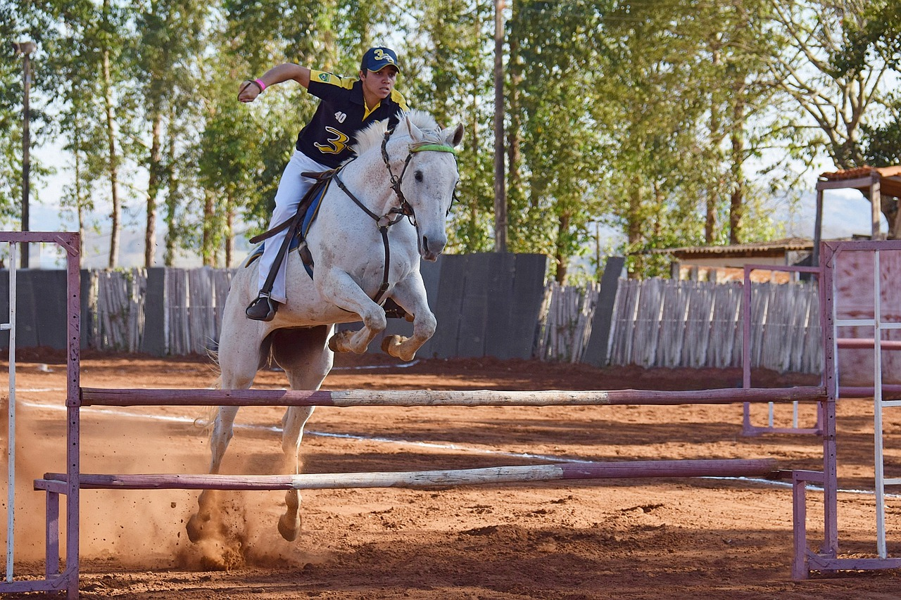
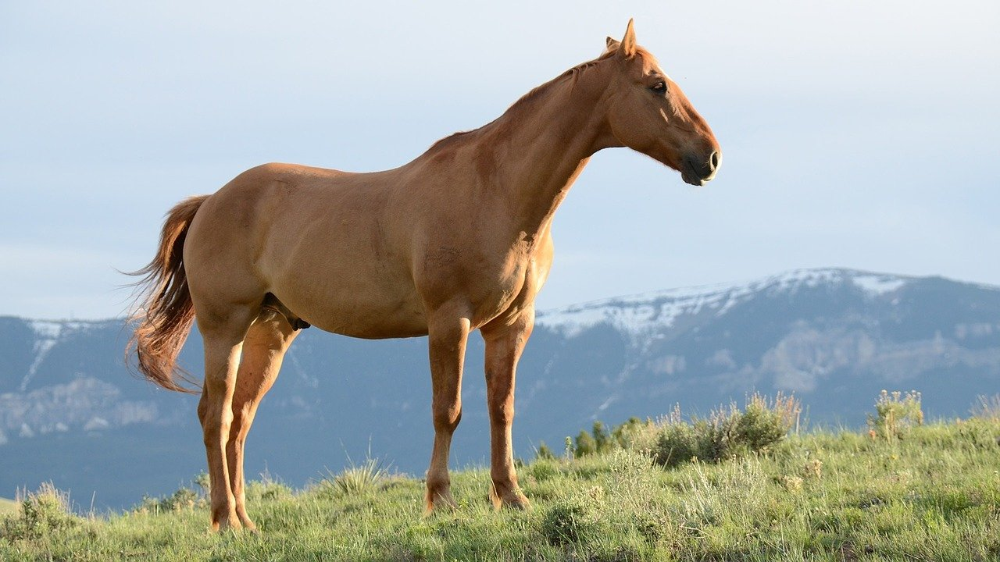
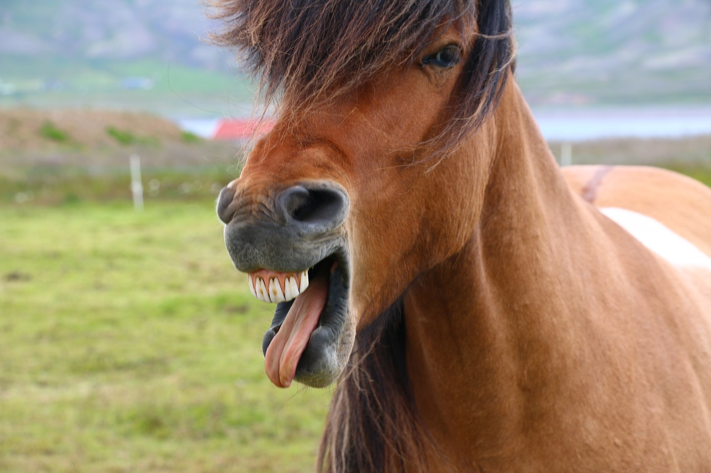
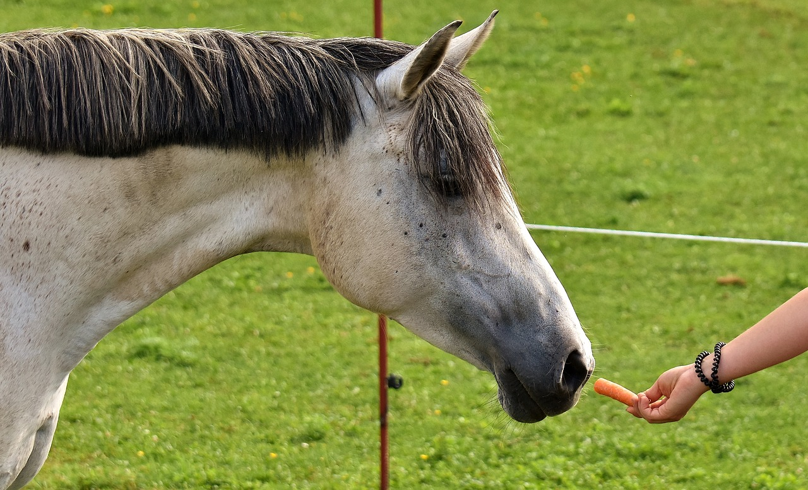

1.分類
学名︰Equus ferus caballus
ウマ（馬）は、ウマ目（奇蹄目）のウマ科のノウマの亜種である。
運搬用（「荷役馬」）、農耕（「農耕馬」）、乗用（「乗用馬」）、軍用（「軍用馬」「騎馬」）、競技用（「競技馬」）などに使われるほか、食用（「食用馬」）にもされる。
※農耕馬※乗用馬
※競技馬
2.身体的特徴
首と頭が長く、長い四肢をもつ。角はない。各脚とも第3指を残し他の指は退化している。よく発達した蹄（ひづめ）をもち、硬い土の上を走ることが出来る。尾と、頭から首の上部にかけての鬣（たてがみ）だけは長いが、全身の毛は短い。
優れた嗅覚をもつが、毒草や血のにおいなどを嗅ぎ分けることは出来ない。顔の両側に目が位置するため視野が広く350度ほどあるともされているが、反面、両眼視出来る範囲は狭いため、距離感を掴むことは苦手とするなど、ヒトとはやや異なった視覚認知を持つ。
馬は自然界では肉食動物の標的にならないよう目立たない毛色が望ましく、目立つ毛色の馬は淘汰されてしまう関係にあった。しかし、馬の家畜化によって飼主となった人間が珍しい毛色の馬も珍重するようになり、馬が家畜化されるようになった6000年前頃から毛色の多様化がみられるようになった。
3.生態的特徴
牡（オス）馬は歯をむき出しにして、あたかも笑っているような表情を見せることがある。これを「フレーメン」と呼び、ウマだけでなく様々な哺乳類に見られる。
※フレーメンをする馬ウマが攻撃しようとする時にとりうる行動のひとつが「うしろげり」を食らわせることである。まず後脚で地面を蹴り、尻を上げ気味の姿勢になると同時に後脚をやや引き付け、足先を鋭く後方に突き出す。
「後脚立ち」すること、つまり後ろ脚だけを地につけて前脚を宙に向かって上げることを英語では「rearing リアリング」と言う。ウマはさまざまな時にこのリアリングを行うが、たとえば驚いた時、興奮した時、攻撃的になっている時、人間に従いたくない時、背中に乗っている人間を振り落としたい時などに行う。
※リアリングをする馬4.食性／繁殖
食性
草食性であり、よく発達した門歯と臼歯で食べ物を噛み切り、擂り潰す。日本等では通俗的には「ウマはニンジンが好物」だと語られるが、国によって「リンゴが好物」や「角砂糖が好物」（トルコ）など、様々に言われている。
生殖
寿命は約25年、稀に40年を超えることもある。繁殖可能な年齢は3-15/18歳。繁殖期は春で、妊娠期間は335日。単子であること（一回の妊娠で宿す子が一頭であること）が多い。
5.生息分布
南北アメリカ大陸に残ったウマ科の動物は、氷期に絶滅した。ミオヒップスやメリキップスからも多様な種分化が起こり、ウマ類は一時、大きな発展を示したが、系統の大半はすでに絶滅し、現存する子孫が、ウマ、シマウマ、ロバの仲間のみとなっている現状は、反芻類の繁栄と対照的である。
6.起源／歴史
先史時代の日本には乗馬の歴史はなく、大陸から伝来した文明、文化とされる。日本に馬が渡来したのは古くても、弥生時代末期ではないかといわれ、4世紀末から5世紀の初頭になって漸く乗馬の風習も伝わったとされる。